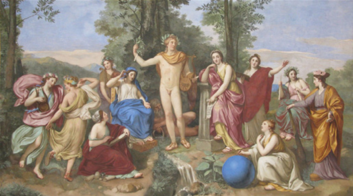
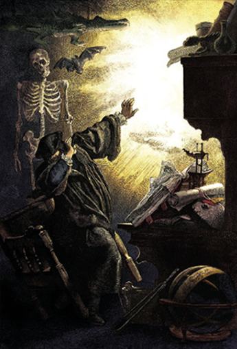
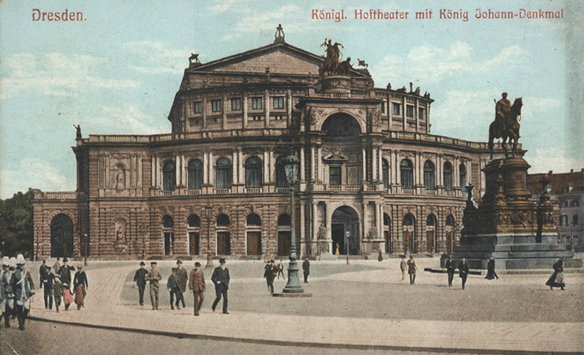
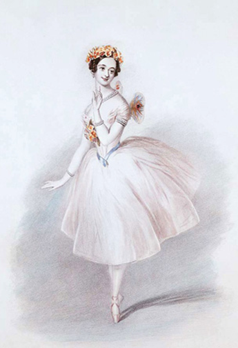
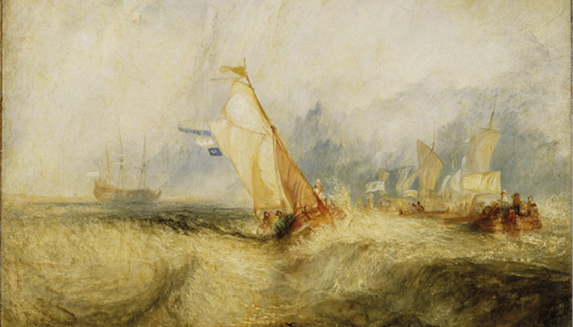
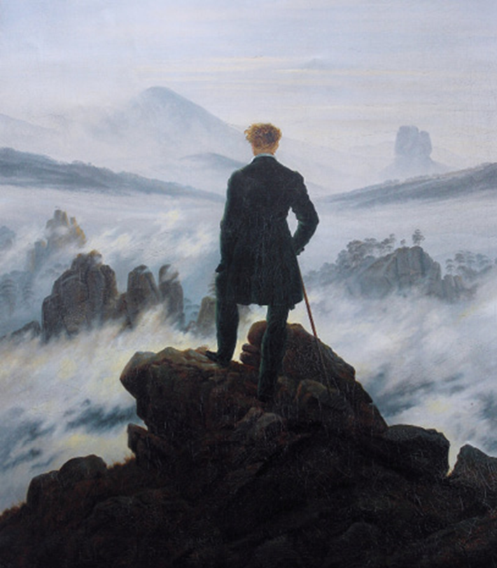
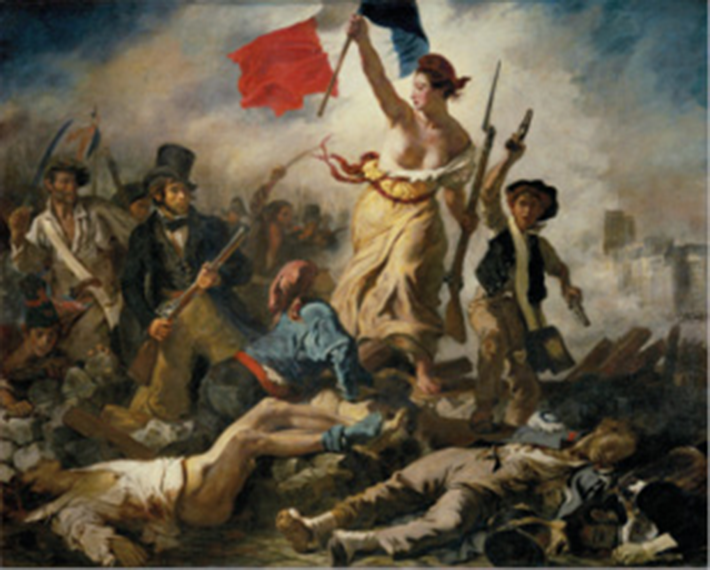
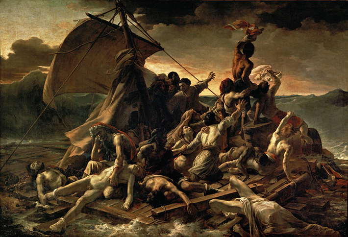

A Revolução Industrial (1760-1840) e a Revolução Francesa (1789-1799) provocaram grandes transformações sociais, políticas e culturais, com desdobramentos importantes no século XIX. Nessa transição entre os séculos XVIII e XIX, surgem movimentos como o Neoclassicismo, o Romantismo e o Realismo, que refletem as principais mudanças sociais e políticas da época. É significativo observar que, em um período não tão abrangente na história, instituem-se movimentos com características e motivações bastante diversificadas. É possível ainda perceber que cada um desses movimentos desdobra-se em outros que os enriquecem e os complexificam ainda mais. Porém, é exatamente essa diversidade que os tornam inegáveis fontes de produções que impactam as produções culturais até hoje.
- Quais são as principais características da arte no Romantismo?
- O que se entende como sublime e grotesco no Romantismo?
- Qual foi a principal mudança provocada pelo Romantismo no trabalho dos artistas?
Neste capítulo, serão abordadas as habilidades EM13LGG601, EM13LGG602, EM13LGG603, e EM13LGG604.
CONSTABLE, John. A carroça de feno, 1821. Óleo sobre tela, 130,2 cm × 185,4 cm. Galeria Nacional, Londres, Inglaterra.
John Constable/The National Gallery London, Inglaterra
MENGS, Anton Raphael. Parnaso, 1761. Afresco, 313 cm × 580 cm. Galeria de Villa Albani-Torlonia, Roma, Itália.
O século XIX e as inovações na arte
As fortes mudanças decorrentes da Revolução Industrial e da Revolução Francesa se refletiram na arte. Do Neoclassicismo, Romantismo e Realismo ao Impressionismo, a arte se torna cada vez mais complexa. Enquanto os artistas neoclássicos submetiam-se às regras acadêmicas, os românticos e realistas buscavam libertar-se delas e expressar livremente seus sentimentos e sua imaginação. Antes da Revolução Industrial, a atividade de produção era basicamente artesanal e manual, com o uso de poucas máquinas. O trabalho era realizado em oficinas, em geral na casa dos próprios artesãos. Com a Revolução Industrial, as grandes máquinas substituíram o trabalho manual. Os artesãos passaram a operários e perderam o controle do processo produtivo e a posse da matéria-prima, do produto final e do lucro. A Revolução teve início na Inglaterra e, em poucas décadas, se espalhou por toda a Europa e os Estados Unidos.
Crianças e mulheres trabalhando em fábrica durante a Revolução Industrial.
Lewis Hine/Biblioteca do Congresso, Washington
Considerada um marco na história, a Revolução Industrial provocou grandes mudanças sociais, como a migração do campo para a cidade, a criação das chamadas cidades industriais, a separação entre bairros luxuosos e subúrbios, doenças e epidemias. Logo, os problemas enfrentados pelos trabalhadores das grandes cidades europeias no século XIX se espalharam para toda a população. As péssimas condições de higiene, moradia e insalubridade provocaram doenças que atingiram milhares de pessoas. Entre elas estão a varíola, a febre tifoide, a tuberculose, a diarreia e a gripe. Com o avanço das doenças e por causa das condições precárias de moradia, as cidades europeias foram reformadas. Um exemplo foi a reforma de Paris, que se tornou referência. A cidade foi praticamente demolida, ou pelo menos boa parte dos prédios mais antigos, para dar lugar a ruas e avenidas, praças e parques.
O espírito do Romantismo
O Romantismo surgiu em reação ao Neoclassicismo e situa-se historicamente entre 1820 e 1850. Em alguns aspectos, o Romantismo se aproxima do Barroco, como na valorização das cores e do contraste claro-escuro. Ao contrário do artista clássico – que apreciava a clareza, o rigor formal, a busca pelo equilíbrio e a organização racional, priorizando a forma e a estrutura –, o artista romântico valorizava a espontaneidade, os sentimentos e a imaginação, priorizando a emoção. No final do século XVIII, o termo “romântico” designava aquilo que agradava à imaginação, o que despertava o sonho e a comoção da alma. O artista romântico via a si próprio como um ser solitário, reflexivo a respeito de sua existência e com uma visão de mundo centrada na individualidade. Dessa maneira, ao criar, ele trazia à tona seu mundo interior. Na Inglaterra, o termo, inicialmente, foi usado para definir o tema das novelas pastoris e de cavalaria da época – a palavra remetia à expressão da emoção provocada pela visão de uma paisagem. Posteriormente, passou a ser usado para se referir especificamente ao Romantismo como movimento artístico-filosófico, que, por um lado, seguiu as ideias do Iluminismo, como liberdade de expressão e afirmação dos direitos individuais. Por outro, em termos conceituais, o Romantismo era oposto ao conceito iluminista de predomínio da razão, e se aproximou dos valores do Sturm und Drang (“tempestade e ímpeto”) – movimento alemão cujos principais elementos eram o sentimento e a natureza. Nesse sentido, tudo era emoção. O Romantismo também valorizava o grotesco, que passa a coexistir como categoria estética com o sublime. Originalmente, o grotesco se referia a seres fantásticos, como animais com forma de plantas; mas, com o tempo, passou a definir aquilo que é deformado, ridículo ou extravagante. Já o sublime sempre esteve presente em diferentes épocas e estilos. Foi com o Romantismo que o grotesco passou a ganhar espaço no campo artístico, especificamente na Literatura e no Teatro, no final do século XVIII e início do século XIX. O destaque ao disforme, baixo, vil, erótico, engraçado e chocante visava desmitificar o que é demasiadamente enaltecido, perfeito ou sacralizado.
O teatro romântico
No teatro romântico, em que a natureza dúbia do ser humano é representada, o grotesco e o sublime foram mais explorados do que em outras linguagens artísticas. O jogo de contrastes está na base também do Romantismo, de modo que a realidade é apresentada sem disfarces, refletindo indissociáveis dualismos, tais como: corpo e alma; feio e belo; sublime e grotesco.
Do grotesco e do sublime – tradução do prefácio de Cromwell, Victor Hugo.
São Paulo: Perspectiva, 2002. Segundo Victor Hugo, o grotesco e o sublime não se excluem, mas operam juntos. Para ele, o homem moderno é o resultado da coexistência do grotesco e do sublime no agir humano, que teria surgido do paradoxo entre corpo e alma. Dessa forma, o drama romântico, por coexistir com o grotesco, iria se caracterizar pela mistura de gêneros, abandonando as fronteiras entre a comédia e a tragédia para produzir a síntese do homem moderno – cômico em meio à tragédia.
Um dos textos mais representativos do teatro romântico, considerado por muitos estudiosos um símbolo do romantismo, é Fausto, do dramaturgo alemão Johann Wolfgang von Goethe. É uma peça escrita em versos e rimas, na qual o personagem Fausto faz um pacto com um demônio, Mefistófeles: ele aceita servi-lo no Inferno em troca de favores na Terra. O autor trabalhou na peça durante grande parte da vida e reuniu nela os principais interesses da época, como os novos conceitos de natureza, ciência, folclore, história, psicologia, política e religião. O protagonista é melancólico e rebelde, contemplativo e, ao mesmo tempo, pronto para qualquer ato heroico de violência. A relação com Margarida simboliza o clímax da experiência de Fausto e se identifica plenamente com o movimento romântico: um herói, que nega se ajustar à sociedade e anseia por algo digno de seus ideais algo puro e inocente. Margarida representa a pureza, e sua conquista é uma grande realização para Fausto. No entanto, ele profana a pureza de Margarida e a leva à morte. Os amores românticos são representados como fatais, e, uma vez que as forças destrutivas e criativas são consideradas parte da natureza do universo, o herói não faz nada para se prevenir contra a morte. O drama romântico surgiu em um momento em que a burguesia conquistava uma posição dominante; por isso, esse gênero refletia significativamente os gostos estéticos burgueses. Nesse período, houve investimentos na cultura e na arte em geral, além de influências do movimento também na arquitetura. As camadas populares desejavam ver em cena apenas ação, mas o teatro romântico trazia aspectos que agradavam à classe burguesa. Os personagens do teatro eram reis e nobres retratados como indivíduos comuns, com particularidades e deformidades de caráter. Eles defendiam mensagens moralistas e mostravam a dualidade do bem e do mal.
Ilustração de Franz Xaver Simm para a peça Fausto, de Goethe, que mostra o fantasma aparecendo na chama.
Simm, Franz Xaver. In: Goethe’s Works: Illustrated by the Best German Artists vol. II, 1885/Coleção particular
Cartão-postal do Hoftheater, teatro em Dresden, Alemanha, 1900. Construído pelo arquiteto alemão Gottfried Semper (1803-1879), entre 1837 e 1841, foi o primeiro grande teatro que substituiu os pequenos teatros de corte.
Andreas Praefcke/Wikimedia Commons/Coleção particular
O balé romântico
O balé romântico era ligado à literatura e à música e narrava, por meio da expressão corporal e da fluidez dos movimentos, histórias que idealizavam o amor. As bailarinas representavam a mulher inacessível e etérea. O figurino, composto de sapatilhas de ponta e longas saias de tule, chamadas de tutus românticos, deixavam a bailarina ainda mais fluida e leve, como se flutuasse. Além disso, havia elementos floridos, que lembravam as moças do campo, e referências a seres sobrenaturais. O início do Romantismo na dança é geralmente associado com a estreia da bailarina Marie Taglioni no balé La Sylphide, em Paris, em 1827, momento que revolucionou a dança na época, pelo figurino e pelos movimentos. As narrativas do balé romântico geralmente apresentavam uma paixão que poderia terminar em tragédia, entre humanos mortais e seres sobrenaturais, como fadas, sílfides ou outros personagens mitológicos. Os saltos e os giros das bailarinas acentuavam o efeito mágico, como se desafiassem as leis da natureza, o que fascinava o público. Essas histórias, contadas por meio da dança e da música, ficaram conhecidas como balé de repertório e encantam o público até hoje. As apresentações exigem um grande número de bailarinos, que executam passos tradicionalmente estabelecidos, embora existam adaptações contemporâneas. Alguns exemplos de balés de repertório muito conhecidos e encenados até hoje são: O quebra-nozes, O lago dos cisnes, Giselle, Copéllia, Dom Quixote, A Bela adormecida, Romeu e Julieta e La Sylphide.
Gênio romântico
Durante o século XIX, os intérpretes e compositores musicais passaram a atuar de forma cada vez mais autônoma, sem a intervenção de nobres e aristocratas. Dessa forma, as composições não pretendiam mais agradar ao público da aristocracia apenas, tampouco ser um mero entretenimento ou um serviço religioso. Os compositores buscavam criar obras grandiosas, complexas e originais, que desafiassem o público. Se, por um lado, os artistas da música ganharam notoriedade pela originalidade e virtuosismo, por outro, sofriam com poucos recursos financeiros e um mercado cada vez mais disputado. Um dos compositores que traduzem a concepção romântica na música e na vida é Ludwig van Beethoven. Ele é um típico gênio romântico. O gênio era uma das concepções que constituíram a estética do Romantismo do século XIX e trata do indivíduo dotado de uma capacidade extraordinária para a expressão criativa de ideias, emoções e sentimentos. Essa noção criou a percepção do artista como aquele que possui uma força quase sobrenatural, um dom inato. O artista romântico, dessa forma, via-se como um tipo de herói que lutava contra as dificuldades da existência e das próprias limitações. Essa noção de heroísmo, por sua vez, influenciou uma importante característica da estética musical do Romantismo: o virtuosismo. O artista romântico devia explorar a técnica ao extremo, procurando atingir limites “sobre-humanos”. O violinista italiano Niccolò Paganini (1782-1840) foi o primeiro grande virtuose do Romantismo. Sua incomparável destreza com o violino, combinada à sua aparência exótica, magnetizava as plateias europeias, que lotavam as salas onde ele se apresentava. Paganini obteve grande reconhecimento e fama e influenciou as futuras gerações de músicos, como o pianista e compositor húngaro Franz Liszt (1811-1886). Entre os gêneros que se destacaram no Romantismo, está a ópera, com as composições dos italianos Giuseppe Verdi (1813-1901) e Gioacchino Antonio Rossini (1792-1868) e do alemão Richard Wagner (1813-1883). As óperas La Traviata (1853), O barbeiro de Sevilha (1816) e O anel dos Nibelungos (1876) são, respectivamente, obras desses compositores. As óperas eram robustas e maior, não só em tamanho, mas também em abrangência. Os instrumentos da seção de metais ganharam mais importância e os de percussão se tornaram mais variados. Na seção de madeiras, foram adicionados instrumentos de sopro, tais como o flautim, o clarone, o corne inglês e o contrafagote. com grande sonoridade, o que exigia uma orquestra
Marie Taglioni como Bayadère, em 1832, no balé de repertório La Sylphide.
Coleção particular
Apesar de a dança ser romântica, ela ficou conhecida como “balé clássico”. A expressão não se refere ao estilo Neoclássico, mas à valorização dos princípios de equilíbrio, harmonia, simetria e disciplina. A motivação dramática da dança e os elementos da narrativa que conduziam o balé de repertório se firmavam na estética romântica.
O romantismo nas Artes Visuais
Entre o fim do século XVIII e meados do século XIX, o romantismo nas Artes Visuais enfatizou o rompimento como o rigor do Neoclassicismo e apresentou visões pessoais, paisagens, culturas consideradas exóticas (não europeias), imagens inspiradas no mundo dos sonhos e do fantástico e retratos político-sociais. Na pintura, destacam-se o alemão Caspar David Friedrich (1774-1840), o inglês Joseph Mallord William Turner (1775-1851), os franceses Eugène Delacroix (1798-1863) e Jean-Louis André Théodore Géricault (1791-1824) e o espanhol Francisco José de Goya y Lucientes (1746-1828). Por sua vez, as obras de William Turner apresentam imagens etéreas, figuras disformes entre neblinas ou vapores. Não há linhas de contorno e faz-se o uso de manchas e grandes áreas de cor, característica que será amplamente explorada mais tarde pelo Impressionismo. As pinturas de Turner estão inseridas no surgimento da indústria e no uso da máquina a vapor, nas mudanças das paisagens. Seus temas estão relacionados a acontecimentos verídicos e à literatura, em especial à obra do poeta inglês William Blake (1757-1827), cuja temática era, entre outras, a pobreza, a injustiça social, a religiosidade e o misticismo.
Por dentro da arte
Nesta pintura, que narra um evento por meio de imagens, Turner retrata o poder da natureza e o heroísmo do homem.
Van Tromp, Going About to Please His Masters, Ships a Sea, Getting a Good Wetting (1844), de Joseph Mallord William Turner. Óleo sobre tela, 92,4 cm × 123,2 cm. The J. Paul Getty Museum, Los Angeles, Estados Unidos.
Bridgeman Images/Easypix Brasil/The J. Paul Getty Museum, Los Angeles
As pinceladas rápidas e oblíquas retratam o céu tempestuoso. O uso de tinta branca sugere o mar agitado e turbulento, com ondas batendo na proa do navio. A aplicação de uma fina camada de tinta branca sobre certas áreas cria um aspecto esfumaçado, enevoado e nebuloso, além da sensação de mares turbulentos. Tons de marrom transmitem uma ideia do poder violento do mar. A elevação de pesadas ondas, que batem intensamente contra a proa do navio, deixa a impressão de um naufrágio iminente. Na proa, lutando contra as ondas, um homem de uniforme branco acena com confiança. Alguns estudiosos acreditam que esse homem seria Cornelis Van Tromp, oficial da Marinha holandesa que foi demitido do serviço naval, em 1666, depois de desobedecer a ordens. Ele teria sido reintegrado no serviço e se reconciliado com superiores da Marinha em 1673. Como símbolo de sua submissão à autoridade, Tromp é retratado, nas palavras de Turner, “a caminho de agradar aos Superiores”. Uma das mais conhecidas obras de Caspar David Friedrich é O peregrino sobre o mar de névoa, um bom exemplo de como os artistas românticos se expressavam. O homem de costas é uma espécie de emblema da experiência romântica da natureza: sozinho nas alturas, ele olha para um ponto inatingível, e o que vê é, ao mesmo tempo, o exterior e a projeção de seu Eu. Eugène Delacroix é considerado o mais importante representante do romantismo francês. Viveu um período no Marrocos, no norte da África, em uma missão artística e científica para documentar costumes e hábitos locais — Marrocos está presente em suas obras posteriores. Suas pinturas apresentam forte comprometimento político, como no quadro A Liberdade guiando o povo. A obra foi criada por inspiração do movimento que retirou Carlos X do poder e levou Luís Felipe, considerado mais em harmonia com os novos ideais de liberdade, ao trono da França. Desde então, por diversas vezes, essa obra foi utilizada como símbolo das lutas populares. Delacroix procurava uma síntese entre o realismo e o imaginário, entre um tema brutal e a descrição de um ideal humanista.
FRIEDRICH, David. O peregrino sobre o mar de névoa, 1818. Óleo sobre tela, 95 × 75 cm. Galeria Kunsthalle, Hamburgo, Alemanha.
Web Gallery of Art/Kunsthalle, Hamburgo
DELACROIX, Eugène. A Liberdade guiando o povo, 1830. Óleo sobre tela, 260 cm × 325 cm. Museu do Louvre, Paris, França.
Museu do Louvre, Paris
GÉRICAULT, Théodore. A balsa da Medusa, 1818-1819. Óleo sobre tela, 491 cm × 716 cm. Museu do Louvre, Paris, França.
Museu do Louvre, Paris
Théodore Géricault iniciou a carreira como pintor utilizando os cânones neoclássicos. Após prestar o serviço militar, viajou para a Itália, onde estudou profundamente as obras de Rafael (1483-1520) e de Michelangelo (1475-1564). Em seu retorno, pintou sua obra-prima, A balsa da Medusa. Essa pintura retrata o acidente da fragata real Medusa, que partiu da França, em junho de 1816, em direção a Saint-Louis, no Senegal, que fica na África Ocidental. Considerada uma das mais modernas embarcações da época, sua missão era tomar posse do Senegal, que havia passado para a tutela francesa. A bordo estavam o então governador do Senegal com a família, soldados e outros tripulantes, totalizando 400 pessoas, seguramente mais do que as condições do barco suportavam. A fragata encalhou, e a evacuação levou apenas o governador, o capitão e grande parte dos oficiais, que ocuparam seis salva-vidas. No entanto, 147 tripulantes não tiveram lugar e foram colocados numa jangada, construída precariamente com tábuas, cordas e partes do mastro, atadas a um dos salva-vidas. O cabo que prendia a jangada ao bote soltou-se e a jangada ficou à deriva por cerca de duas semanas no mar tempestuoso. Por conta dessas condições, muitas pessoas morreram e houve até atos de canibalismo para sobrevivência. Após treze dias à deriva, a jangada foi resgatada por um pequeno navio mercante. A essa altura, restavam cerca de dez sobreviventes. Sobre esse tema dramático, o artista concebeu uma extraordinária representação, realista e sombria. Para tanto, fez numerosos estudos de cadáveres de condenados à morte. Temas de naufrágio e desespero pela vida são típicos do Romantismo. A pintura tornou-se uma crítica ao governo da época pelo acidente, que foi amplamente noticiado pelos jornais parisienses. As investigações duraram meses e desencadearam um escândalo político. A doença, a loucura e o desespero tornaram-se temas constantes nas obras de Géricault
Francisco de Goya foi pintor da corte espanhola e é considerado um precursor do Romantismo na Espanha. Suas obras têm elementos do Neoclassicismo; mas as que foram pintadas ao final da vida do artista apresentam características mais marcantes do Romantismo. Reconhecido como gênio de sua época, expressou-se na pintura e, principalmente, na gravura. Na pintura, Goya conferiu genialidade e inovou os gêneros do retrato e da pintura histórica. Na gravura, principalmente na técnica de água-forte , desenvolveu imagens obscuras em famosas séries. Entre seus temas, estão os horrores da guerra, a ação incompreensível de personagens fantásticos e cenas históricas. Suas imagens apresentam analogias aos conflitos sociais, que oscilam entre o simbolismo fantástico e os fatos históricos.
Durante um período de grave doença, Goya hospedou-se na casa de um amigo, no sul da Espanha, onde teve contato com uma coleção de gravuras inglesas de gênero satírico. Em 1797, Goya apresentou uma de suas mais preciosas séries de gravuras em metal, intitulada Os caprichos. As obras dessa série formam um universo irracional e um imaginário sombrio que combinam o sublime e o grotesco. Em O sono da razão produz monstros, o artista retratou a si mesmo e, em outras obras da série, retratou alguns de seus amigos. Goya produzia retratos para a corte da Espanha, mas era nas gravuras que expressava os temas que lhe interessavam. A série, portanto, não foi produzida para atender a nenhuma encomenda. Em 6 de fevereiro de 1799, Goya anunciou, nas páginas de um jornal, a venda das gravuras da série Os caprichos, com 80 impressões, pelo preço de 320 reales . É a partir desse momento que os artistas passam a trabalhar em temas e em suportes que atendam às próprias
Mãos à obra
1
Quanto às características do Romantismo, analise os itens a seguir e assinale o incorreto.
- O artista romântico procurou se libertar das convenções acadêmicas em favor da livre expressão.
- A valorização dos sentimentos e da imaginação foi um dos princípios da criação romântica.
- A estética romântica se opôs radicalmente à moderação neoclássica.
- Ao negar o Neoclassicismo, o Romantismo se aproximou do Renascimento.
- Os artistas românticos eram fascinados pelo mistério e o sobrenatural.
2
Fuvest-SP 2014
MEIRELLES, Vítor. Moema, 1866. Museu de Arte de São Paulo Assis Chateaubriand
Em seu contexto de origem, o quadro acima corresponde a uma
- denúncia política das guerras entre as populações indígenas brasileiras.
- idealização romântica num contexto de construção da nacionalidade brasileira.
- crítica republicana à versão da história do Brasil difundida pela monarquia.
- defesa da evangelização dos índios realizada pelas ordens religiosas no Brasil.
- concepção de inferioridade civilizacional dos nativos brasileiros em relação aos indígenas da América Espanhola.
3
UFS-SE Podem ser considerados importantes balés de repertório, exceto:
- Coppélia.
- Pássaro de Fogo.
- Quebra-Nozes.
- La Sylphide.
- Ópera do Malandro.
4
Os grandes compositores de ópera do Romantismo foram:
- Brahms, Vivaldi e Goethe.
- Wagner, Schubert e Bach.
- Verdi, Rossini e Wagner.
- Carlos Gomes, Verdi e Bach.
- Monteverdi, Händel e Wagner.
1
UFSC
Museu do Louvre, Paris
O quadro é do pintor francês Eugène Delacroix (1798-1863) e é intitulado “A Liberdade guiando o povo”, datado de 1830. Este quadro tornou-se uma das representações mais famosas da Revolução Francesa, pois:
- nele podemos observar todas as características do simbolismo, bem como a representação de todas as classes que participaram da fase inicial do movimento, com destaque para a bandeira tricolor criada pelos revolucionários, levada pela figura que lembra a participação intensa e fundamental das mulheres no processo.
- utiliza uma linguagem de fácil entendimento, onde é possível depreender todas as fases da Revolução Francesa numa só imagem, situando a obra no contexto da arte impressionista.
- tornou-se também um ícone do estilo rococó, do qual Delacroix é um dos fundadores e permite observar o caráter violento da Revolução.
- sintetiza, com traços pertencentes ao romantismo francês, as ideias fundamentais da revolução, representadas pela bandeira revolucionária, levada pela mulher que constitui a personificação da liberdade, e pela presença de personagens que representam a burguesia e os sans-culottes, linha de frente do movimento antimonárquico.
2
UEM Assinale o que estiver correto.
- 01. No período romântico, houve uma ampliação do acesso de músicos das camadas sociais mais baixas às obras dos grandes compositores, pois, com o impulso do capitalismo, a publicação de partituras cresceu e seu preço caiu.
- 02. A expansão colonial exerceu profunda influência sobre a vida musical da Europa Ocidental, já que, ao baratear o custo de várias matérias-primas, como madeiras e marfim, permitiu a redução dos preços de vários instrumentos musicais.
- 04. Muitos adeptos do ideário romântico na Europa e nas Américas cultuavam o que entendiam por genialidade dos criadores artísticos e defendiam a ideia de que não seria possível transferir esse tipo de capacidade inata por meio do ensino.
- 08. Um aspecto da Época Moderna que a diferencia profundamente dos Tempos Antigos e Medievais é o desaparecimento das conexões entre artes e rituais, pois estes se tornaram cada vez menos presentes na vida social.
- 16. Ao contrário das demais artes, os espetáculos de dança de salão não incorporam recursos audiovisuais eletrônicos, pois sua ideia básica é valorizar apenas o desempenho individual dos bailarinos.
- Soma:
3
UFSM-RS A tela de Doré, ao representar o desespero de Andrômeda (princesa da mitologia grega que enfurece Poseidon), expressa o arrebatamento sentimental que constitui a sensibilidade romântica do século XIX.
Andrômeda (1869), Tela de Gustave Doré. http://www.illusionsgallery.com/AndromedaDore.html – 06.7.07.
Sobre isso, pode-se afirmar:
- o ideário romântico invade o campo político, predispondo os homens a reconhecer a liberdade dos povos como condutora dos Estados Nacionais.
- o romantismo não interfere nas ações políticas dos homens do século XIX, pois se restringe ao campo das artes. o ideário romântico não colabora na formação identitária dos Estados Nacionais nem nas lutas por liberdade e democracia.
- o exagero sentimental dos românticos produz um desinteresse em relação à Natureza, especialmente quanto às matas tropicais.
- o romantismo se constitui, ao longo do século XIX, na ideologia que justifica o desenvolvimento burguês na indústria e no comércio internacional.